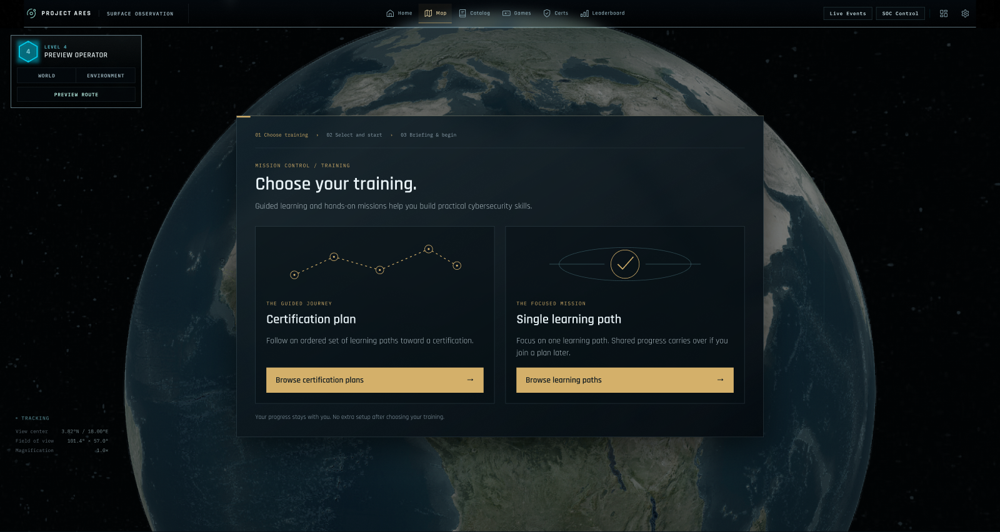
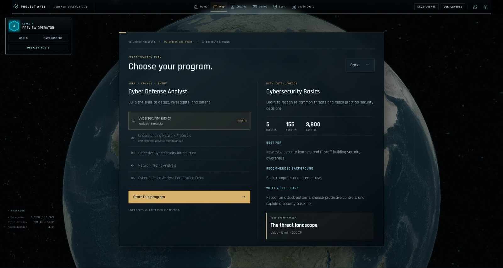
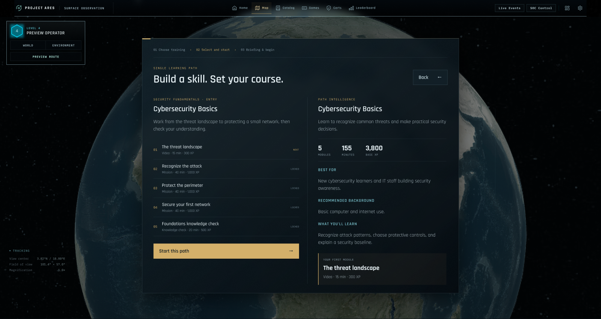
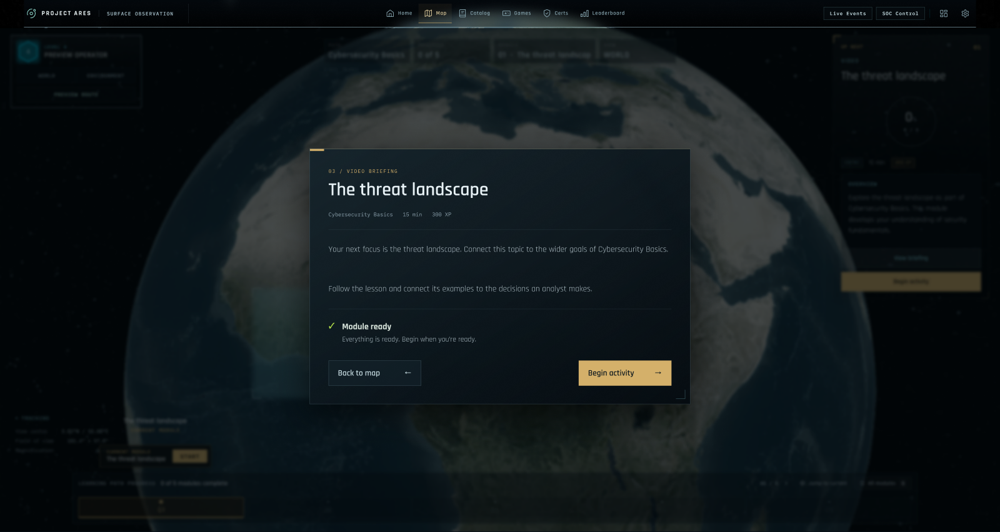
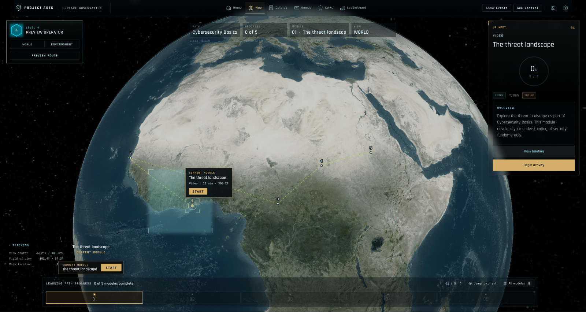

My globe UI.
My approach to a clearer start.
I’ve brought the cinematic globe, amber controls, compact operator panel, and original typography from my personal branch into this five-screen FTUE walkthrough.
04 Map stays optional.
I’ve linked each Figma preview below to its separate HTML screen. I’m using Cybersecurity Basics at 0/5 complete to show a first-time experience; my original reference showed a returning learner.
01 · Choose training
I offer two routes into the same curriculum: a certification plan or a single learning path.

02A · Certification plan
I start the Cyber Defense Analyst program with Cybersecurity Basics.

02B · Single learning path
I also offer a focused route into Cybersecurity Basics and its first module.

03 · Briefing and begin
I take the learner straight to The threat landscape briefing, with Begin activity as the next action.

04 · Optional map
I keep my globe UI available for orientation, with the first module selected and 0 of 5 complete.
